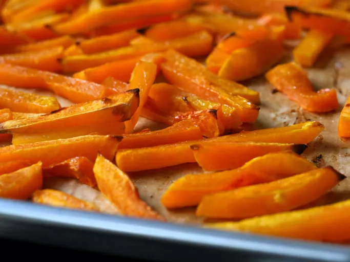

Squash Fries

Description
These butternut squash fries are nutritious and tasty! They taste like sweet potato fries but better!
Ingredients
- 1 butternut squash, halved and seeded
- salt to taste
Steps
- Preheat the oven to 220 degrees C.
- Use a sharp knife to carefully cut away the peel from the squash. Cut the squash into sticks, about 1/3 inch thick. Blot any moisture from the butternut squash fries with paper towels, then arrange squash pieces on a baking sheet. Season with salt.
- Bake in the preheated oven until brown and crisp on the edges, about 20 minutes, turning once.